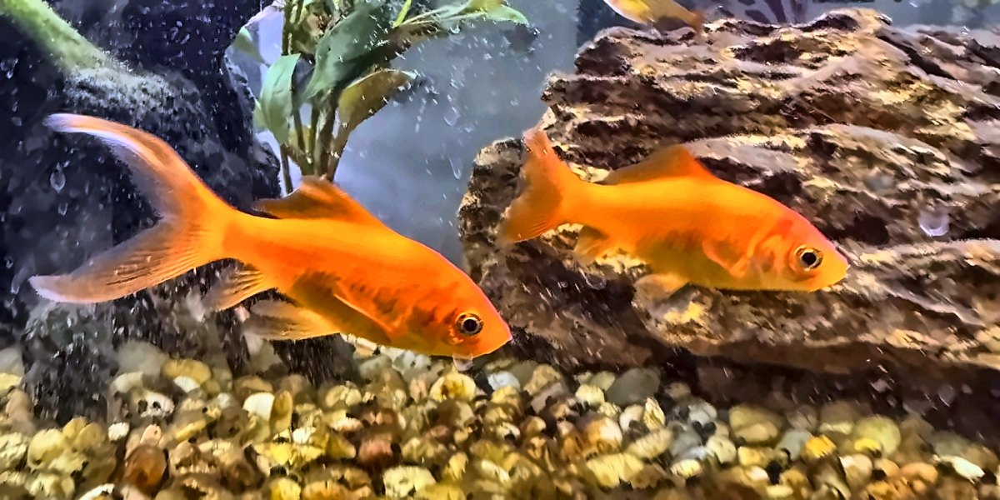
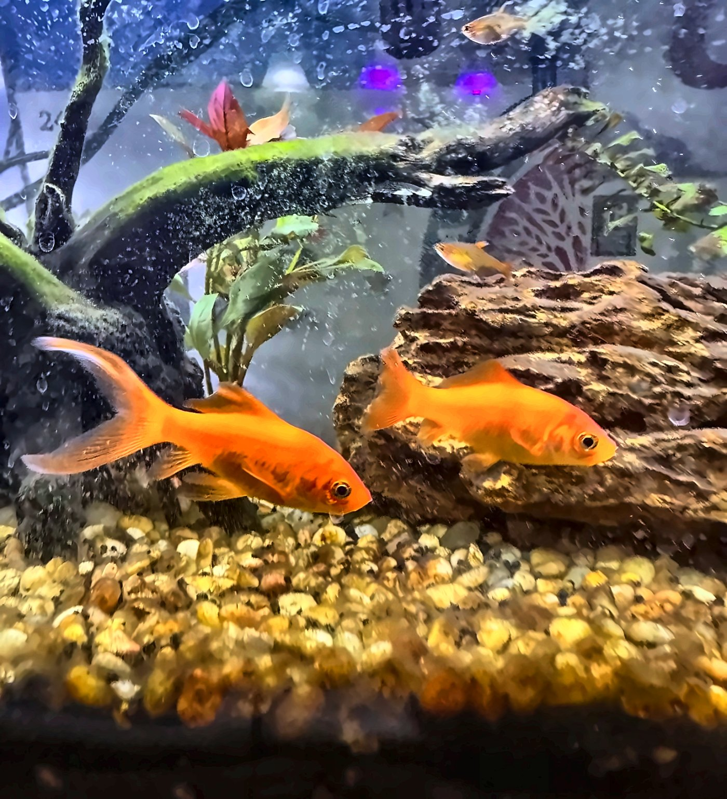
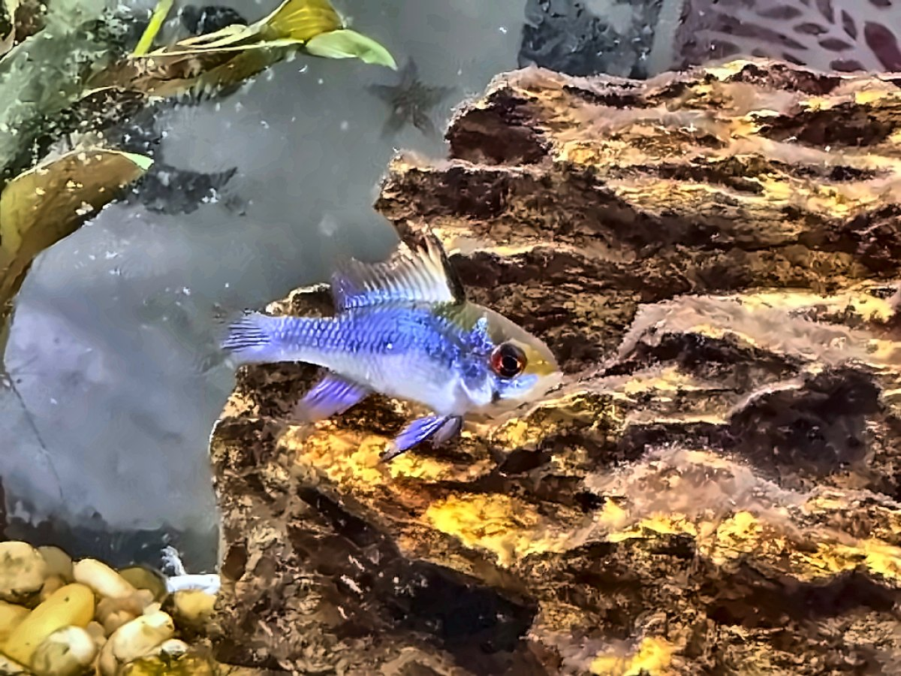
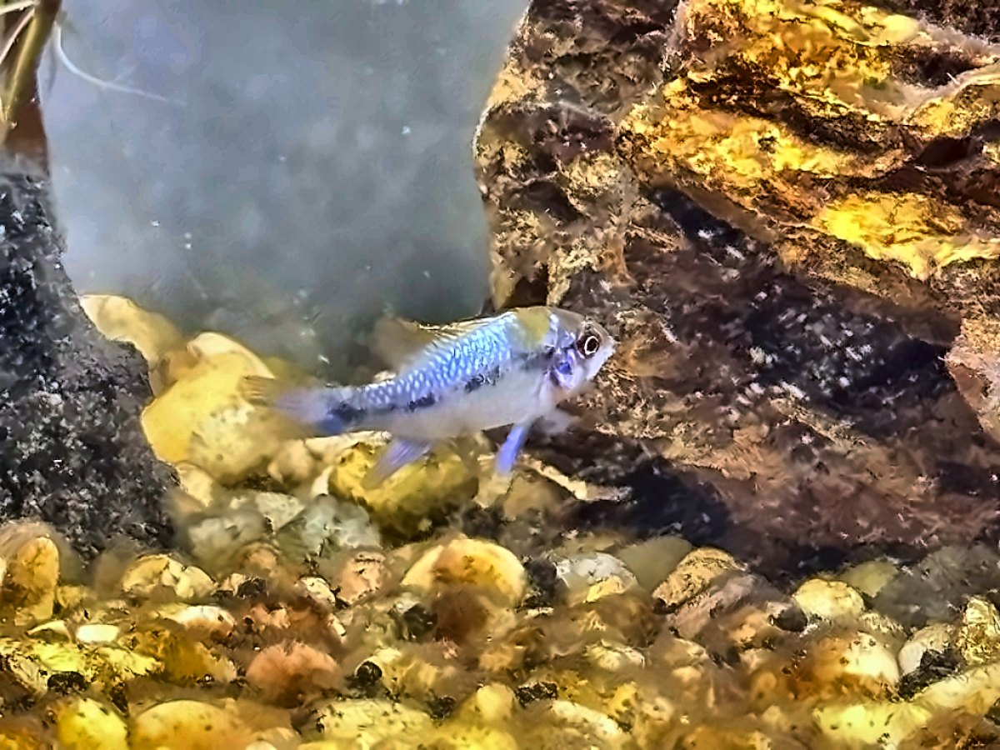
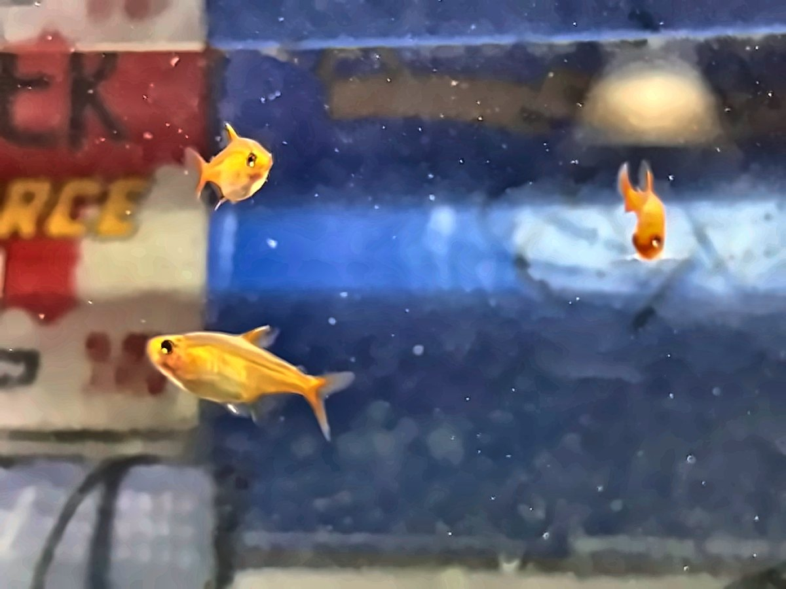
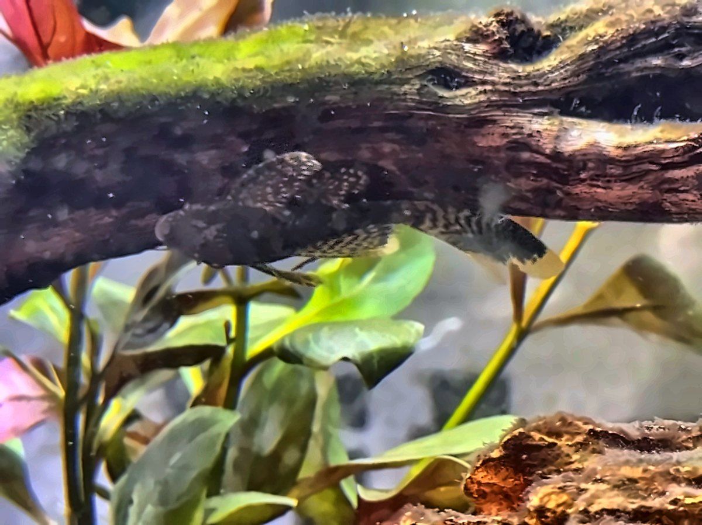
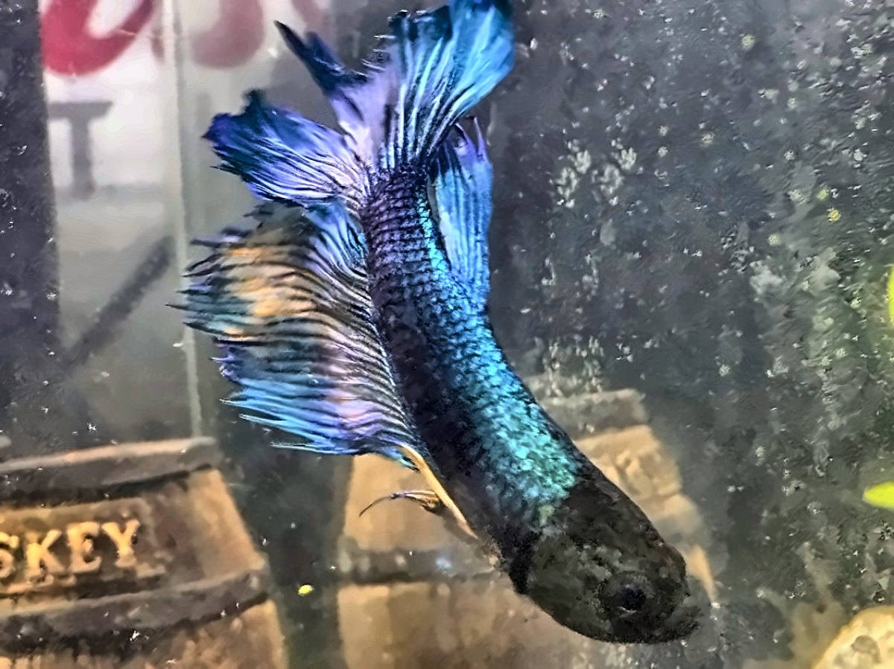
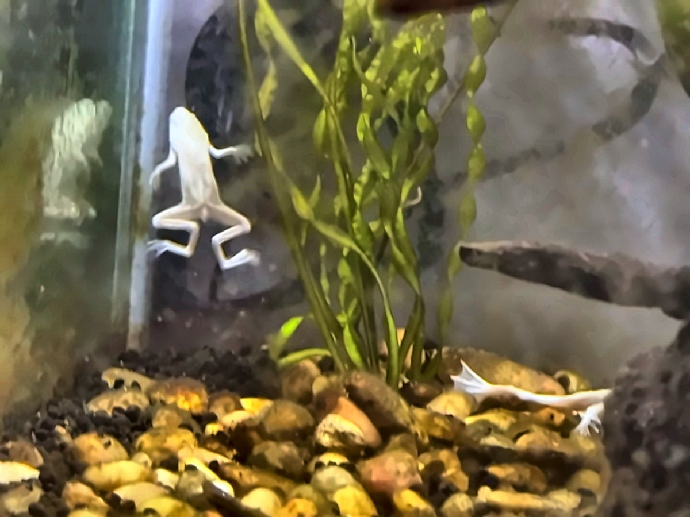
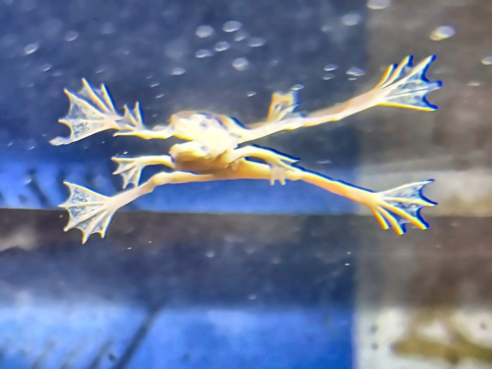

Thatcher EthanGoldfish
Thatcher & Ethan
- Thatcher has a much bigger rear fin. That long, flowing tail is the giveaway.
- Ethan is the smaller, weaker of the two.
- Ethan can sometimes be caught eating his own poop.

Spot a fish? Find what it looks like, then follow the clue.
Huge, long tail fin → Thatcher
Smaller, weaker one → Ethan
No stripe on its side → Connor
Dark stripe across its side → Rohan
Biggest → Gabe
Middle size → Amit
Smallest & skinniest → Caden
The algae-eater clinging to wood or glass → Stella
Blue half moon betta → F.R.O.G. T.W.O.
The two little frogs → Jessica & Liv

Thatcher EthanGoldfish

ConnorBlue & red-eyed

RohanBlue & red-eyed

Amit Caden GabeThe trio
These three look alike, so go by size:

StellaPleco

F.R.O.G. T.W.O.Half moon betta

JessicaAfrican dwarf frog

LivAfrican dwarf frog